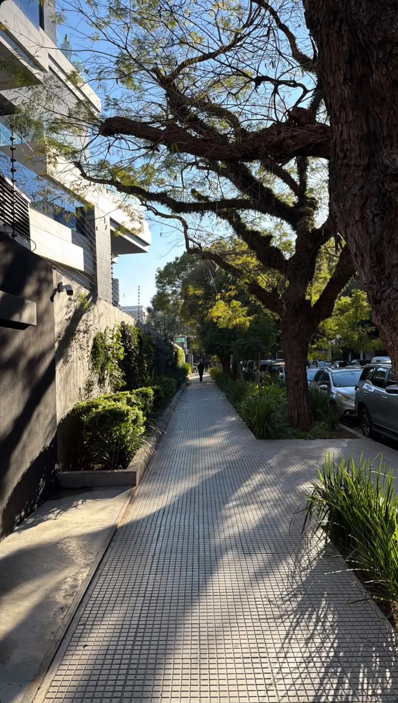

01 / Exterior pulidaMateria / Forma / Identidad
La primera impresión.Dejá tu huella.
Texturas y terminaciones para recibir, recorrer y transformar tus exteriores.
Explorá exterior pulida
Texturas y terminaciones para recibir, recorrer y transformar tus exteriores.
Explorá exterior pulida¿Qué ambiente querés transformar?
Elegilo y descubrí las líneas para tu proyecto.
Una mirada al proceso de fabricación en nuestra planta. Experiencia y tecnología, desde 1978.
Conocé nuestra historiaEncontrá la línea que le da carácter a tu espacio.
Explorá sus modelos, colores
y terminaciones.